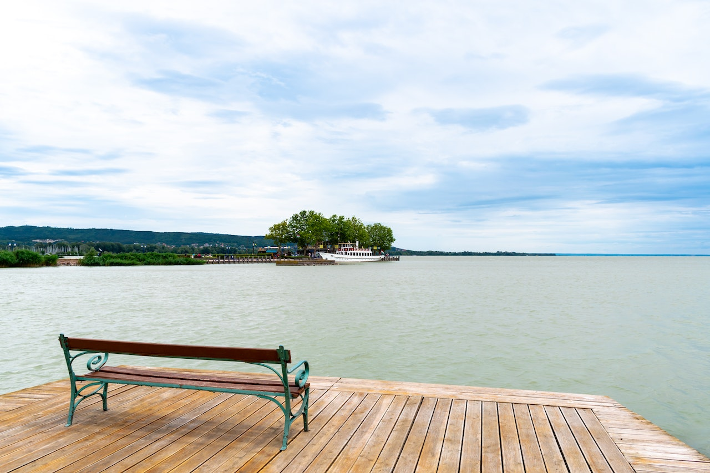
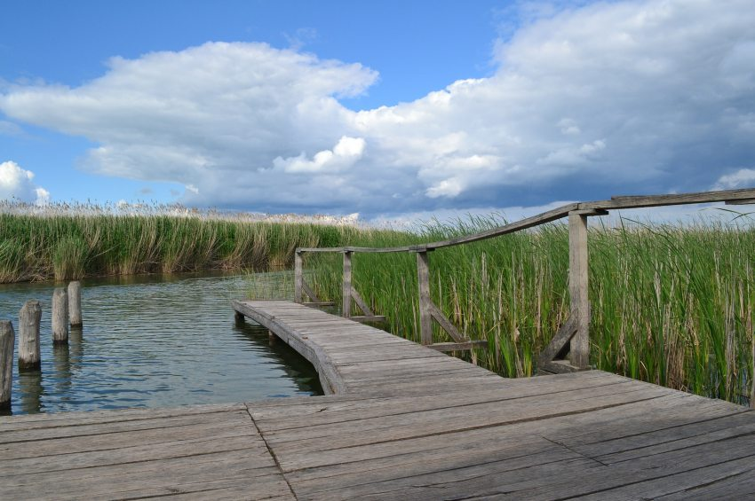

Balaton
A Balaton (költői nevén: „a magyar tenger”, becenevén: Balcsi, németül: Plattensee, latinul: Lacus Pelso, horvátul: Blatno jezero) tó a Dunántúlon, Közép-Európa legnagyobb tava, Magyarország vízrajzának meghatározó eleme. Könnyen felmelegedő, sekély vize kiválóan alkalmassá teszi a fürdésre és sportolásra, élővilága rendkívül gazdag, a táj változatos vulkanikus kúpjaival sok tekintetben egyedi.
Típusa geológiailag a Velencei-tóhoz hasonlóan tektonikus eredetű, sekély vizű ároktó. 77 km hosszú, legkisebb szélessége Tihanynál 1,3 km, legnagyobb 12,7 km Balatonvilágos és Balatonalmádi között,átlagos szélessége 7,7 km, felülete 600 km². Legmélyebb pontja a Tihanyi-szoros legmélyebb árkában az úgynevezett a „Tihanyi-kút”, ahol a tó medre 11-12,5 méter mélyen van. Más forrás szerint a kút mélysége 10,67 méter. A Szántód-Tihany kompjárat útvonalától mintegy 100-150 méterre keletre, a parttól körülbelül 300 méterre van.
Az 59 800 hektár területen fekvő vizes élőhely keleti medencéjét a Tihanyi-félsziget választja el a tó többi részétől. Déli partjánál medre sekélyebb. Északi oldalán található a badacsonyi borvidék és a Tapolcai-medence, jellegzetes vulkáni tanúhegyeivel.
Tisza-tó
A Tisza-tó (1988-ig Kiskörei víztározó) Magyarország második legnagyobb tava és legnagyobb mesterséges tava a Tiszán, az Alföld északi részén. Létrehozásának legfontosabb okai a Kiskörei Vízerőmű működéséhez szükséges egyenletes vízhozam biztosítása volt, valamint az ugyanebben az időszakban, Tiszaújvárosban telepített új Tiszai Hőerőmű működéséhez szükséges magas vízszint biztosítása duzzasztással.
Az Alföld északi részén, Heves vármegye délkeleti szélén, Borsod-Abaúj-Zemplén, Heves és Jász-Nagykun-Szolnok vármegye határán fekszik. Területe 127 km², melyen mozaikosan váltakoznak a nyílt vízfelületek, szigetek, holtágak, sekély csatornák. Hossza (a Tisza folyása mentén mérve, vagyis nagyjából észak-déli irányban) 27 kilométer, átlagos mélysége 1,3 méter; a legmélyebb pontján azonban 17 méter mély. 43 km²-nyi sziget található benne.
A Tisza-tó közúti megközelítése tulajdonképpen nem egyszerű, mert a térségében húzódó főutak jobbára messze elkerülik; ez alól az egyetlen kivétel a 33-as főút, mely nemcsak, hogy érinti, de (az északi harmadában) keresztül is szeli a tó területét, Poroszló és Tiszafüred között. A tó (folyásirány szerinti) bal partján fekvő települések között a Tiszaroff-Tiszafüred közti 3216-os húzódik végig, a jobb part községeit a 3213-as út köti össze; a tó északi oldalán fekvő települések megközelítési és összekötő útjai a 3301-es és a 3302-es utak, a két part közti átjárást pedig a 33-as főúton felül még egy út biztosítja: ez a 3209-es, mely Kiskörénél szeli át a Tiszát.
Szelidi-tó

A Szelidi-tó Bács-Kiskun vármegye egyik legjelentősebb turisztikai célpontja, Dunapataj nagyközség közelében, a település határain belül.
A Szelidi-tó 5 kilométer hosszú, 150–200 méter széles, 3–4 méter mély, vízfelülete megközelítőleg 80 hektár, ezzel hazánk ötödik legnagyobb természetes tava. Bács-Kiskun vármegye Kalocsai járásában, Dunapataj nagyközség külterületén található, mintegy 3 kilométerre Újtelek községtől északra, a Dunapatajt Szakmáron át Kalocsa keleti részeivel összekötő 5308-as útról letérve közelíthető meg. A tó déli partján, nyugalomba jutott futóhomok területein kellemes strandok kerültek kialakításra.
A tó a nevét a víz közvetlen közelében fekvő faluról, illetve annak pusztulása után a közelben elterülő szántóföldi művelésre alkalmas Szelid pusztáról kapta. Szelid falucska a török adóösszeírások szerint az 1540-es években 20-25 családból állt (kb. 100 fő), eszerint átlagos alföldi magyar falu lehetett. A 16. század második felében elpusztult; határát onnantól, mint pusztát mindig a patajiak művelték és mindig Patajhoz tartozott. A tó nevét legendák is magyarázzák. Az egyik szerint Szelid neve a közeli Várdomb erődítményével és a török hódoltság harcaival függhet össze, ugyanis a török csapatok a magyar túlerőt látva, megállásra és kompromisszumokra kényszerültek, 'megszelídültek' ezen a területen. Egy másik legenda szerint Bence vitéz úgy meghajszolta lovait, hogy azok patái elvástak. De miután a lovak hosszasan a tó vizében állva ittak, sebeik gyorsan rendbe jöttek. A legvalószínűbb, hogy a tó neve egyáltalán nincs összefüggésben a szelíd melléknévvel. Minden bizonnyal a szel magyar igetőből származik.